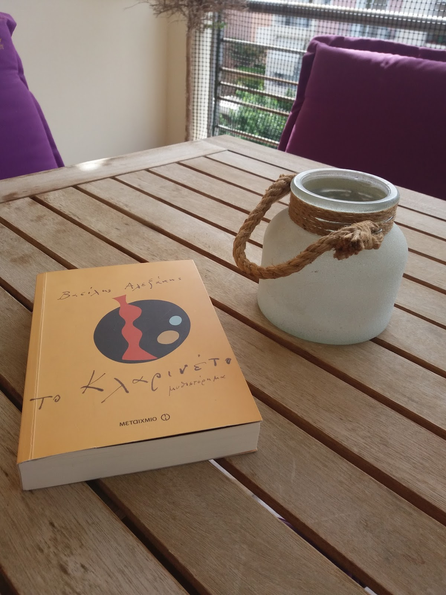
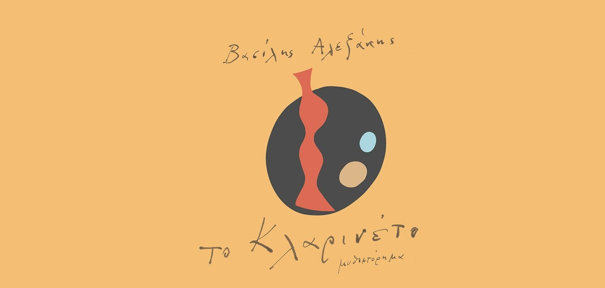

Υπάρχει άραγε κάτι που δεν διαγράφεται ποτέ από τη μνήμη μας; σε ρώτησα. Δεν χρειάστηκε να σκεφτείς πολύ. - Η θάλασσα, είπες. Μπορεί κανείς να ξεχάσει τα βουνά, τις κοιλάδες, τα δάση, τα ποτάμια, ακόμη και τους καταρράκτες παρά τον θόρυβο που κάνουν, όχι όμως τη θάλασσα. Περικλείει όλα τα μυστήρια και ξέρει όλα τα παιχνίδια, είναι παμπάλαιη κι απίστευτα νέα. Κανένα άλλο τοπίο δεν μοιάζει τόσο με τη ζωή, να γιατί δεν μπορούμε να την ξεχάσουμε, επειδή θυμάται την παιδική ηλικία του κόσμου. Πρέπει να τη σεβόμαστε όσο και τη ζωή, και να την ατενίζουμε όρθιοι. Με κάνουν έξαλλο οι παραθεριστές που ξαπλώνουν στην άμμο, θέλω να τους πλακώσω στις κλοτσιές για να τους αναγκάσω να σηκωθούν, οφείλουμε όλοι να στεκόμαστε όρθιοι στις ακρογιαλιές. Ο συγγραφέας ταξιδεύει από το Παρίσι –όπου αντιμετωπίζει τη μοιραία ασθένεια του φίλου και εκδότη του– στην Ελλάδα της κρίσης – όπου γνωρίζεται με ανθρώπους τσακισμένους από την οικονομική ανέχεια. Ανάμεσα στη ζεστασιά των ημερών και τη θλίψη της απουσίας∙ ανάμεσα στο Παρίσι και την Αθήνα∙ ανάμεσα στη μητρική γλώσσα και τη γραφή ξεφυτρώνει αναπάντεχα το ερώτημα: Γιατί ξεχνάμε;
|  |  |
Βρείτε περισσότερες πληροφορίες σχετικά με το βιβλίο: Το Κλαρινέτο.